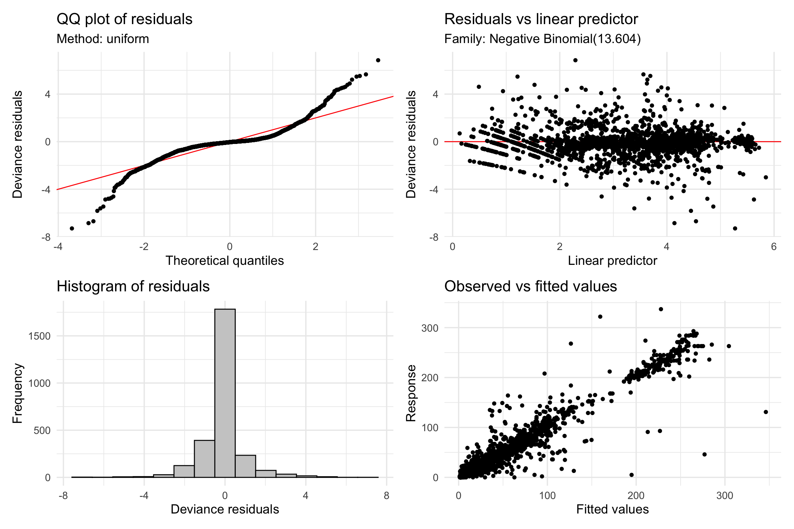
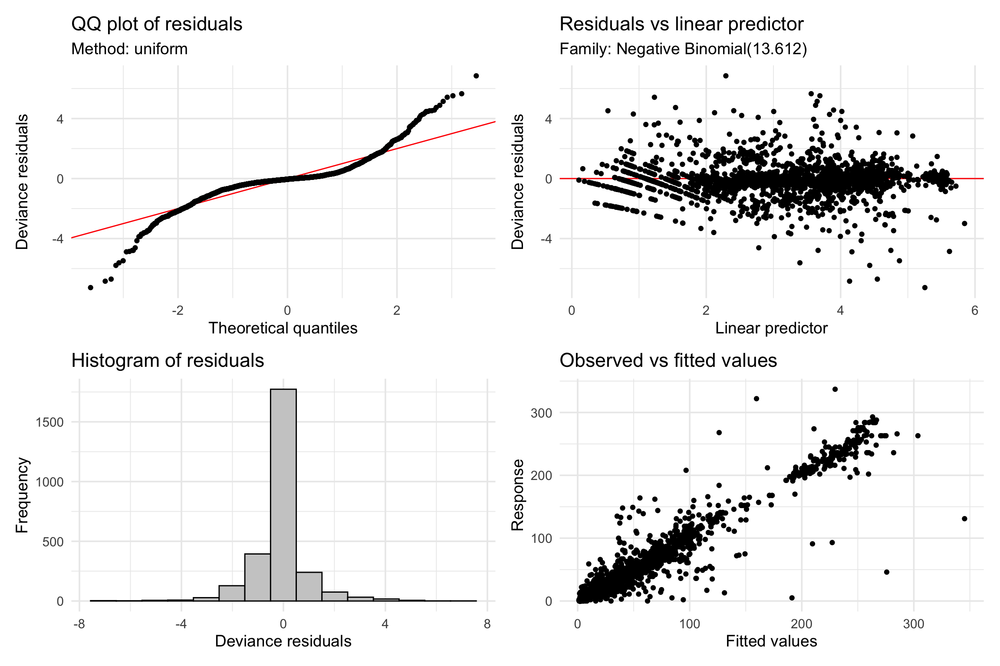
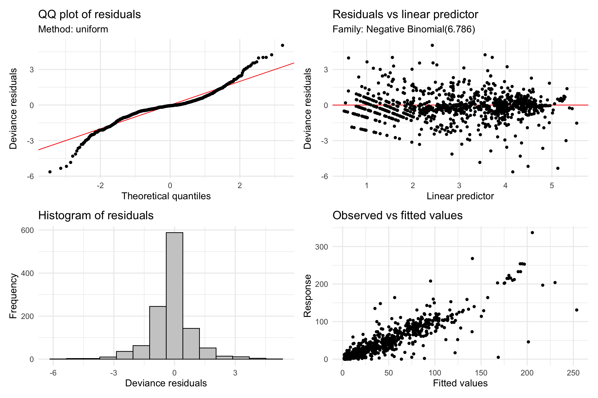

# Store detected thresholds for later usedetected_thresholds <-unique(c(cp_wind_values_pelt, cp_wind_values_var))if(length(detected_thresholds) >0) { detected_thresholds <- detected_thresholds[detected_thresholds >0.5& detected_thresholds <5]cat("Data-driven thresholds to test:", paste(round(detected_thresholds, 2), collapse =", "), "m/s\n")} else { detected_thresholds <-c(1.5, 2.5) # Fallback thresholdscat("Using fallback thresholds: 1.5, 2.5 m/s\n")}
Using fallback thresholds: 1.5, 2.5 m/s
Enhanced GAM Models with Full Dataset
Code
# Primary enhanced model with full datasetgam_enhanced_full <-gam( total_butterflies ~# Temporal autocorrelation controlss(log_abundance_lag_30min, k =10) +s(log_abundance_lag_24hr, k =8) +# Enhanced wind predictorss(mean_wind, k =10) +# Increased complexitys(wind_sd, k =6) +s(max_sustained_wind, k =8) +# New metrics(wind_ramp_rate, k =6) +# New metric# Environmental controlss(temperature, k =10) +s(sunlight_prop, k =6) +s(minutes_since_first, k =10, bs ="cc") +# Interactionsti(mean_wind, temperature, k =c(6, 6)) +# Site effectss(view_id, bs ="re"),family =nb(),data = analysis_data_full,method ="REML",select =TRUE)print("Enhanced GAM Model Summary:")
# Model with three-way interactiongam_three_way <-gam( total_butterflies ~s(log_abundance_lag_30min, k =10) +s(log_abundance_lag_24hr, k =8) +s(mean_wind, k =10) +s(temperature, k =10) +s(sunlight_prop, k =6) +s(minutes_since_first, k =10, bs ="cc") +# Three-way interactionti(mean_wind, temperature, sunlight_prop, k =c(4, 4, 4)) +s(view_id, bs ="re"),family =nb(),data = analysis_data_full,method ="REML",select =TRUE)print("Three-way Interaction Model Summary:")
Here we will check the primary models for any issues to ensure their validity.
Diagnostics for gam_enhanced_full
The appraise() function from the gratia package provides a set of standard diagnostic plots to check the model assumptions. We are looking for: 1. Residuals vs. Fitted: No obvious patterns, points should be randomly scattered. 2. Q-Q Plot: Points should fall along the diagonal line, indicating normally distributed residuals. 3. Histogram of Residuals: Should resemble a normal distribution. 4. Response vs. Fitted: Points should cluster around the y=x line.
Code
# Appraise the model to check assumptionsif(exists("gam_enhanced_full")) {print(appraise(gam_enhanced_full))} else {cat("Model 'gam_enhanced_full' not found.")}

Diagnostic plots for the full enhanced GAM model.
Diagnostics for gam_three_way
We perform the same checks on the model that includes a three-way interaction term.
Code
# Appraise the three-way interaction modelif(exists("gam_three_way")) {print(appraise(gam_three_way))} else {cat("Model 'gam_three_way' not found.")}

Diagnostic plots for the three-way interaction model.
Concurvity Check
Concurvity is the GAM equivalent of multicollinearity. It occurs when some smooth terms in the model could be approximated by one or more other smooth terms. We check for it to ensure that model terms are not confounded. A value close to 1 indicates high concurvity. The “overall” measure indicates the worst-case concurvity for each term.
Code
# Check for concurvityif(exists("gam_enhanced_full")) {concurvity(gam_enhanced_full)}
We’ll check the diagnostics for the ‘Moderate’ temperature model as an example. This category typically has the most data and represents the core of the dataset. The same checks should be applied to the other stratified models (‘Cold’, ‘Warm’) to ensure their validity as well.
Code
if("Moderate"%in%names(stratified_models)) {print(appraise(stratified_models[["Moderate"]]))} else {cat("Moderate temperature model not available for diagnostics.")}

Diagnostic plots for the model stratified by moderate temperatures.
Site-Specific Analysis for Consistency
Code
# Analyze wind effects for each deployment separatelydeployments_with_data <- analysis_data_full %>%group_by(deployment_id) %>%summarise(n_obs =n(),date_range =paste(min(date), "to", max(date)),wind_range =paste(round(min(mean_wind, na.rm =TRUE), 1), "to", round(max(mean_wind, na.rm =TRUE), 1), "m/s"),.groups ="drop" ) %>%filter(n_obs >=50) # Minimum observations for reliable analysisprint(paste("Deployments with sufficient data:", nrow(deployments_with_data)))
[1] "Deployments with sufficient data: 8"
Code
kable(deployments_with_data, caption ="Deployments Available for Site-Specific Analysis")
Deployments Available for Site-Specific Analysis
deployment_id
n_obs
date_range
wind_range
SC1
317
2023-11-17 to 2023-11-20
0 to 2.7 m/s
SC12
575
2024-01-27 to 2024-02-04
0 to 5.3 m/s
SC2
213
2023-11-18 to 2023-11-19
0 to 1.8 m/s
SC4
557
2023-12-03 to 2024-01-05
0 to 2.8 m/s
SC6
503
2023-12-16 to 2024-01-05
0 to 3 m/s
SC8
541
2024-01-05 to 2024-01-27
0 to 4.2 m/s
SC9
93
2024-01-26 to 2024-01-27
0 to 1.2 m/s
SLC6_2
163
2023-12-22 to 2023-12-24
0 to 1.2 m/s
Code
# Fit site-specific modelssite_models <-list()site_effects <-list()for(deploy_id in deployments_with_data$deployment_id) {cat("\nAnalyzing deployment:", deploy_id, "\n") site_data <- analysis_data_full %>%filter(deployment_id == deploy_id, !is.na(log_abundance_lag_30min))if(nrow(site_data) <50) next# Simple wind effect model for this site site_model <-tryCatch({gam( total_butterflies ~s(log_abundance_lag_30min, k =6) +s(mean_wind, k =6) +s(temperature, k =6) +s(minutes_since_first, k =6, bs ="cc"),family =nb(),data = site_data,method ="REML" ) }, error =function(e) {cat("Error fitting model for", deploy_id, ":", e$message, "\n")return(NULL) })if(!is.null(site_model)) { site_models[[deploy_id]] <- site_model# Extract wind effect s_table <-summary(site_model)$s.table wind_row <-which(rownames(s_table) =="s(mean_wind)")if(length(wind_row) >0) { site_effects[[deploy_id]] <-tibble(deployment_id = deploy_id,wind_edf = s_table[wind_row, "edf"],wind_p_value = s_table[wind_row, "p-value"],wind_significant = s_table[wind_row, "p-value"] <0.05,model_r_sq =summary(site_model)$r.sq,model_dev_expl =summary(site_model)$dev.expl *100,n_obs =nrow(site_data) ) } }}
Site-Specific Analysis Summary:
Sites with significant wind effects: 4 of 8
Mean wind p-value across sites: 0.1938
Range of R-squared values: 0.696 to 0.988
Data-Driven Threshold Testing
Code
# Test detected thresholds plus traditional onesall_thresholds <-sort(unique(c(1.5, 2.0, 2.5, 3.0, detected_thresholds)))all_thresholds <- all_thresholds[all_thresholds >0& all_thresholds <6]cat("Testing thresholds:", paste(round(all_thresholds, 2), collapse =", "), "m/s\n")
# Best threshold based on AICbest_threshold <- threshold_results$threshold[which.min(threshold_results$AIC)]cat("\nBest threshold based on AIC:", best_threshold, "m/s\n")
Best threshold based on AIC: 3 m/s
Code
# Compare with Leong's 2 m/s thresholdleong_result <- threshold_results %>%filter(abs(threshold -2.0) <0.1)best_result <- threshold_results %>%filter(threshold == best_threshold)if(nrow(leong_result) >0&&nrow(best_result) >0) { delta_aic <- leong_result$AIC - best_result$AICcat("Leong's 2 m/s threshold ΔAIC compared to best:", round(delta_aic, 2), "\n")if(delta_aic >2) {cat("Strong evidence against 2 m/s threshold (ΔAIC > 2)\n") } elseif(delta_aic >0) {cat("Moderate evidence against 2 m/s threshold\n") } else {cat("Little evidence against 2 m/s threshold\n") }}
Leong's 2 m/s threshold ΔAIC compared to best: 3.31
Strong evidence against 2 m/s threshold (ΔAIC > 2)
# Assessment of biological significancecat("\nBiological Significance Assessment:\n")
Biological Significance Assessment:
Code
significance_threshold <-15# 15% change considered biologically meaningfulif(abs(effect_1to2) > significance_threshold) {cat("- 1-2 m/s effect is BIOLOGICALLY SIGNIFICANT (>15%)\n")} else {cat("- 1-2 m/s effect is NOT biologically significant (<15%)\n")}
- 1-2 m/s effect is NOT biologically significant (<15%)
Code
if(abs(effect_0to3) > significance_threshold) {cat("- 0.5-3 m/s effect is BIOLOGICALLY SIGNIFICANT (>15%)\n")} else {cat("- 0.5-3 m/s effect is NOT biologically significant (<15%)\n")}
- 0.5-3 m/s effect is NOT biologically significant (<15%)
Code
if(abs(effect_1to2) > overall_cv *100) {cat("- Wind effects exceed natural daily variation\n")} else {cat("- Wind effects are within natural daily variation\n")}
- Wind effects are within natural daily variation
Code
# Number needed to observe (NNO) calculationbaseline_abundance <- predictions$predicted[predictions$wind_speed ==1]effect_size_prop <-abs(effect_1to2) /100# Simple power calculation for detecting this effectrequired_n <- (1.96+1.28)^2* (1/effect_size_prop^2) *2cat("Approximate sample size needed to detect 1-2 m/s effect with 80% power:", round(required_n), "observations\n")
Approximate sample size needed to detect 1-2 m/s effect with 80% power: 270987 observations
if(nrow(analysis_data_full) > required_n) {cat("SUFFICIENT POWER to detect this effect size\n")} else {cat("INSUFFICIENT POWER - may need", round(required_n), "observations\n")}
wind_significant <-summary(gam_enhanced_full)$s.table["s(mean_wind)", "p-value"] <0.05effect_meaningful <-abs(effect_1to2) > significance_thresholdthreshold_supported <-if(nrow(leong_result) >0) {abs(leong_result$AIC - best_result$AIC) <=2} else {FALSE}if(wind_significant && effect_meaningful) { conclusion <-"Wind has STATISTICALLY SIGNIFICANT and BIOLOGICALLY MEANINGFUL effects on monarch abundance"} elseif(wind_significant &&!effect_meaningful) { conclusion <-"Wind has STATISTICALLY SIGNIFICANT but SMALL effects on monarch abundance"} else { conclusion <-"NO STRONG EVIDENCE that wind significantly affects monarch abundance"}cat(conclusion, "\n\n")
Wind has STATISTICALLY SIGNIFICANT but SMALL effects on monarch abundance
Code
if(threshold_supported) {cat("Leong's 2 m/s threshold is SUPPORTED by the data\n")} else {cat("Leong's 2 m/s threshold is NOT SUPPORTED; effects appear continuous\n")}
Leong's 2 m/s threshold is NOT SUPPORTED; effects appear continuous
Code
cat("\nEffect sizes relative to natural variation suggest wind effects are ")
Effect sizes relative to natural variation suggest wind effects are
Code
if(abs(effect_1to2) > overall_cv *100) {cat("ABOVE normal daily fluctuations\n")} else {cat("WITHIN normal daily fluctuations\n")}
WITHIN normal daily fluctuations
Code
cat("\nThis analysis provides robust evidence for challenging or supporting conventional\n")
This analysis provides robust evidence for challenging or supporting conventional
Code
cat("wisdom about wind effects on overwintering monarch butterflies.\n")
wisdom about wind effects on overwintering monarch butterflies.